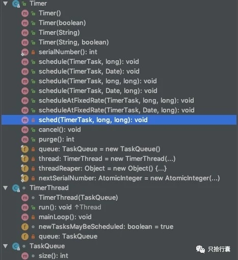

由需求产出的一篇文章，憋了很久。以下将会看到，使用Timer进行任务调度，用ScheduledExecutor和Calendar实现任务调度，Spring中的任务调度TaskScheduler，开源工具包Quartz的简单介绍。
使用Timer任务调度 Timer是java.util.Timer提供的比较简单的调度工具，实现任务调度的核心是Timer和TimerTask。其中Timer负责在schedule方法中设定TimerTask任务，以及任务执行的起始时间delay和间隔执行的时间period；TimerTask负责创建需要调度的任务，开发者需要实现run方法，然后将其丢给Timer去执行即可。
下面这个例子，用不同的方法实现了两个任务调度，其中一个任务达到条件后使用cancel方法终止了调度。
1 2 3 4 5 6 7 8 9 10 11 12 13 14 15 16 17 18 19 20 21 22 23 24 25 26 27 28 29 30 31 32 33 34 35 36 37 38 39 40 41 42 43 import java.util.Date;import java.util.Timer;import java.util.TimerTask;public class TimerDemo extends TimerTask private String taskName="" ; protected TimerDemo (String taskName) super (); this .taskName=taskName; } @Override public void run () System.out.println("TimerTask " +taskName+"," +new Date()); } public static void main (String[] args) Timer timer = new Timer(); long delay1 = 1 * 1000 ; long period1 = 1000 ; timer.schedule(new TimerDemo("task 1" ),delay1,period1); long delay2 = 2 * 1000 ; long period2 = 1000 ; timer.schedule(new TimerTask() { String taskName = "task 2" ; int i = 0 ; @Override public void run () i++; System.out.println("TimerTask " +taskName+"," +new Date()); if (i>2 ){ cancel(); } } },delay2,period2); } }
控制变量i大于等于2后，任务调度被终止，只剩下一个任务。输出结果：
1 2 3 4 5 6 7 8 9 10 11 TimerTask task 1 ,Sat Dec 29 15 :03 :25 CST 2018 TimerTask task 2 ,Sat Dec 29 15 :03 :26 CST 2018 TimerTask task 1 ,Sat Dec 29 15 :03 :26 CST 2018 TimerTask task 2 ,Sat Dec 29 15 :03 :27 CST 2018 TimerTask task 1 ,Sat Dec 29 15 :03 :27 CST 2018 TimerTask task 2 ,Sat Dec 29 15 :03 :28 CST 2018 TimerTask task 1 ,Sat Dec 29 15 :03 :28 CST 2018 TimerTask task 1 ,Sat Dec 29 15 :03 :29 CST 2018 TimerTask task 1 ,Sat Dec 29 15 :03 :30 CST 2018 TimerTask task 1 ,Sat Dec 29 15 :03 :31 CST 2018 TimerTask task 1 ,Sat Dec 29 15 :03 :32 CST 2018
如果调整调度周期，会发现所有的任务都是同一个线程来调度的，多个任务是串行执行，前一个任务的延迟或异常都将会影响到之后的任务。下图是Timer类的结构。

我们从执行开始追溯源码，先进入schedule方法，发现最终是调用的sched方法。
1 2 3 4 5 6 7 8 public void schedule (TimerTask task, long delay, long period) if (delay < 0 ) throw new IllegalArgumentException("Negative delay." ); if (period <= 0 ) throw new IllegalArgumentException("Non-positive period." ); sched(task, System.currentTimeMillis()+delay, -period); }
这里我们发现了queue和thread的踪影，给queue加上控制线程同步synchronized。
1 2 3 4 5 6 7 8 9 10 11 12 13 14 15 16 17 18 19 20 21 22 23 24 25 26 27 private final TaskQueue queue = new TaskQueue();private final TimerThread thread = new TimerThread(queue);... private void sched (TimerTask task, long time, long period) if (time < 0 ) throw new IllegalArgumentException("Illegal execution time." ); if (Math.abs(period) > (Long.MAX_VALUE >> 1 )) period >>= 1 ; synchronized (queue) { if (!thread.newTasksMayBeScheduled) throw new IllegalStateException("Timer already cancelled." ); synchronized (task.lock) { if (task.state != TimerTask.VIRGIN) throw new IllegalStateException( "Task already scheduled or cancelled" ); task.nextExecutionTime = time; task.period = period; task.state = TimerTask.SCHEDULED; } queue.add(task); if (queue.getMin() == task) queue.notify(); } }
我们继续看TaskThread的执行。
1 2 3 4 5 6 7 8 9 10 11 12 13 14 15 16 public void run () try { mainLoop(); } finally { synchronized (queue) { newTasksMayBeScheduled = false ; queue.clear(); } } }
mainLoop方法就不展开，这里展示核心代码段。
1 2 3 4 5 6 7 8 9 10 11 12 13 14 15 16 17 18 19 synchronized (task.lock) { if (task.state == TimerTask.CANCELLED) { queue.removeMin(); continue ; } currentTime = System.currentTimeMillis(); executionTime = task.nextExecutionTime; if (taskFired = (executionTime<=currentTime)) { if (task.period == 0 ) { queue.removeMin(); task.state = TimerTask.EXECUTED; } else { queue.rescheduleMin( task.period<0 ? currentTime - task.period : executionTime + task.period); } }
最后总结下，Timer 的设计核心是一个TaskQueue和一个TaskThread。Timer 将接收到的任务丢到自己的TaskQueue中，TaskQueue按照Task的最初执行时间进行排序。TimerThread在创建Timer时会启动成为一个守护线程。这个线程会轮询所有任务，找到一个最近要执行的任务，然后休眠，当到达最近要执行任务的开始时间点，TimerThread被唤醒并执行该任务。之后TimerThread更新最近一个要执行的任务，继续休眠。
Timer的优点在于简单易用，缺点除了单线程调度问题，还有使用的场景比较单一。比如，设置每星期二的16:38:10执行任务，Timer就不是太适用。
用ScheduledExecutor和Calendar实现任务调度 这是两个东西组合使用，所以先简单介绍下ScheduledExecutor
ScheduledExecutor 与Timer比较，优化了任务执行方式，采用线程池并行执行，说到线程池，上篇文章有过一点介绍了。这里直接上代码例子，介绍看注释。
1 2 3 4 5 6 7 8 9 10 11 12 13 14 15 16 17 18 19 20 21 22 23 24 25 26 27 28 29 30 31 import java.util.concurrent.Executors;import java.util.concurrent.ScheduledExecutorService;import java.util.concurrent.TimeUnit;public class ScheduledExecutorDemo implements Runnable @Override public void run () System.out.println("task 1" ); } public static void main (String[] args) ScheduledExecutorService service = Executors.newScheduledThreadPool(10 ); service.scheduleAtFixedRate(new ScheduledExecutorDemo(),1000 ,1000 , TimeUnit.SECONDS); service.scheduleAtFixedRate(new Runnable() { @Override public void run () System.out.println("task 2" ); } },1000 ,1000 ,TimeUnit.SECONDS); } }
关于日历类Calendar就不做详细讲解，我们来看看怎么Calendar+ScheduledExecutor解决较为复杂的调度。
实现每周五12点调度任务 代码一现，其义自见。
1 2 3 4 5 6 7 8 9 10 11 12 13 14 15 16 17 18 19 20 21 22 23 24 25 26 27 28 29 30 31 32 33 34 35 36 37 38 39 40 41 42 43 44 45 46 47 48 49 50 51 52 53 54 55 56 57 58 59 60 61 62 63 64 65 66 67 68 69 70 71 72 73 74 75 76 77 78 79 80 81 82 83 84 import java.util.Calendar;import java.util.concurrent.Executors;import java.util.concurrent.ScheduledExecutorService;import java.util.concurrent.TimeUnit;public class ScheduledExecuteCalendar private static ScheduledExecutorService service = Executors.newScheduledThreadPool(10 ); public Calendar getEarliestDate (Calendar currentDate, int dayOfWeek, int hourOfDay, int minuteOfHour, int secondOfMinite) int currentWeekOfYear = currentDate.get(Calendar.WEEK_OF_YEAR); int currentDayOfWeek = currentDate.get(Calendar.DAY_OF_WEEK); int currentHour = currentDate.get(Calendar.HOUR_OF_DAY); int currentMinute = currentDate.get(Calendar.MINUTE); int currentSecond = currentDate.get(Calendar.SECOND); boolean weekLater = false ; if (dayOfWeek < currentDayOfWeek) { weekLater = true ; } else if (dayOfWeek == currentDayOfWeek) { if (hourOfDay < currentHour) { weekLater = true ; } else if (hourOfDay == currentHour) { if (minuteOfHour < currentMinute) { weekLater = true ; } else if (minuteOfHour == currentSecond) { if (secondOfMinite < currentSecond) { weekLater = true ; } } } } if (weekLater) { currentDate.set(Calendar.WEEK_OF_YEAR, currentWeekOfYear + 1 ); } currentDate.set(Calendar.DAY_OF_WEEK, dayOfWeek); currentDate.set(Calendar.HOUR_OF_DAY, hourOfDay); currentDate.set(Calendar.MINUTE, minuteOfHour); currentDate.set(Calendar.SECOND, secondOfMinite); return currentDate; } public static void main (String[] args) ScheduledExecuteCalendar test = new ScheduledExecuteCalendar(); Calendar currentDate = Calendar.getInstance(); long currentDateLong = currentDate.getTime().getTime(); System.out.println("当前日期： " + currentDate.getTime().toString()); Calendar earliestDate = test.getEarliestDate(currentDate, 6 , 12 , 00 , 00 ); long earliestDateLong = earliestDate.getTime().getTime(); long delay = earliestDateLong - currentDateLong; System.out.println("下一次执行时间：" +earliestDate.getTime().toString()); long period = 7 * 24 * 60 * 60 * 1000 ; System.out.println("等待执行..." ); service.scheduleAtFixedRate(new Runnable() { @Override public void run () System.out.println("Task ScheduledExecute" ); } }, delay, period, TimeUnit.MILLISECONDS); } }
Spring中的任务调度TaskScheduler TaskScheduler用于对Runnable的任务进行调度，其中包含多种实现，多数对任务进行调度的实现是ThreadPoolTaskScheduler；另外需要用到Trigger接口计算任务的下次执行时间；我们先看下Trigger接口的实现。
Trigger Trigger接口定义如下。
1 2 3 4 5 6 7 8 9 10 11 public interface Trigger @Nullable Date nextExecutionTime (TriggerContext triggerContext) ; }
其中提供了一个接口：nextExecutionTime来获取下次执行时间，接受的参数为TirggerContxt对象，这个参数对象能获取上次原本的计划时间 / 实际的执行时间 / 实际的完成时间，你问我是怎么知道？点进去看源码呀！
1 2 3 4 5 6 7 8 9 10 11 12 13 14 15 16 17 18 19 20 21 22 23 24 public interface TriggerContext @Nullable Date lastScheduledExecutionTime () ; @Nullable Date lastActualExecutionTime () ; @Nullable Date lastCompletionTime () ; }
继续返回来，来看看有哪些实现类继承Trigger接口（IDEA中快捷键，option + command +B / ctrl + alt + B ）；第一个是CronTrigger，通过Crob表达式来生成的调度计划，还可以选择是否加上时区。
举例：工作日的9-17点之间，每隔30分钟执行一次；
1 new CronTrigger("0 0/30 9-17 * * MON-FRI" )
第二个实现类是PeriodicTrigger，也用于定期执行，有两种模式可以选择：setFixedRate，boolean类型，默认是false。和 setInitialDelay，long类型，表示启动任务后延迟多长时间开始执行第一次任务。最后就是构造方法，参数period，long类型，表示间隔时长；参数timeUnit，TimeUnit类型，指定时长单位。
1 2 3 4 5 6 7 8 9 10 11 12 13 14 15 16 17 18 19 public void setFixedRate (boolean fixedRate) this .fixedRate = fixedRate; } public void setInitialDelay (long initialDelay) this .initialDelay = this .timeUnit.toMillis(initialDelay); }
TaskScheduler
TaskScheduler接口的实现类有ThreadPoolTaskScheduler，其中还有ConcurrentTaskScheduler，DefaultManagedTaskScheduler，TimerManagerTaskScheduler，这里重要说下默认的实现类ThreadPoolTaskScheduler。
在大多数场景下都使用它来进行任务调度，除了实现TaskScheduler接口外，还包含了一些对ThreadPoolTaskScheduler进行操作的接口：AsyncListenableTaskExecutor和SchedulingTaskExecutor。其常用的方法如下：
1 2 3 4 5 6 7 8 9 10 11 12 13 14 15 16 17 18 19 20 21 22 23 24 25 26 27 28 29 30 31 32 33 34 35 36 37 38 39 40 41 42 43 44 45 public void setPoolSize (int poolSize) Assert.isTrue(poolSize > 0 , "'poolSize' must be 1 or higher" ); this .poolSize = poolSize; if (this .scheduledExecutor instanceof ScheduledThreadPoolExecutor) { ((ScheduledThreadPoolExecutor) this .scheduledExecutor).setCorePoolSize(poolSize); } } public void setErrorHandler (ErrorHandler errorHandler) this .errorHandler = errorHandler; } public int getActiveCount () if (this .scheduledExecutor == null ) { return 0 ; } return getScheduledThreadPoolExecutor().getActiveCount(); } public void execute (Runnable task) Executor executor = getScheduledExecutor(); try { executor.execute(errorHandlingTask(task, false )); } catch (RejectedExecutionException ex) { throw new TaskRejectedException("Executor [" + executor + "] did not accept task: " + task, ex); } } public Future<?> submit(Runnable task) { ExecutorService executor = getScheduledExecutor(); try { return executor.submit(errorHandlingTask(task, false )); } catch (RejectedExecutionException ex) { throw new TaskRejectedException("Executor [" + executor + "] did not accept task: " + task, ex); } }
Spring中提供Scheduled注解来实现快捷的任务调度，需要注意的是必须使用@EnableScheduling注解启用对@Scheduled注解的支持，@EnableScheduling必须使用在项目中某一个被@Configuration注解的类上，比如：
1 2 3 4 @Configuration @EnableScheduling public class DBConfiguration }
Scheduled注解用在方法下，用户表示这个方法将会被调度，所注解的方法返回类型最好是void类型，否则它的返回值将不会被TaskScheduler所使用。同时，如果需要参数对象，需要通过依赖注入的方式引用，其中包含：
cron：使用cron语法来指定调度计划 zone：指定时区，默认为本时区 fixedDelay：指定fixedDelay的值，默认单位是毫秒 fixedRate：指定上一次任务开始时间到下一次任务开始时间的间隔时间，单位默认是毫秒 initialDelay：设置初始延迟时间 其中cron / fixedDelay / fixedRate三个属性必须且只能出现一个，下面举个例子：
1 2 3 4 5 6 7 8 9 10 11 12 13 14 15 16 @Service public class ScheduleService private static final Logger logger = LoggerFactory.getLogger(ScheduleService.class); @Scheduled(fixedRate = 4000) public void testSchedule () logger.info("TestSchedule begins to execute!" ); try { Thread.sleep(1000 ); } catch (InterruptedException e) { logger.error("TestSchedule has been interrupted!" , e); return ; } logger.info("TestSchedule execution was completed!" ); } }
还有一个直接在Spring Boot中使用@Autowired注解的方式，直接实现threadPoolTaskScheduler，实现动态的添加、修改、删除定时任务，也是实现需求考虑的方案。
1 2 3 4 5 6 7 8 9 10 11 12 13 14 15 16 17 18 19 20 21 22 23 24 25 26 27 28 29 30 31 32 33 34 35 36 37 38 39 40 41 42 43 44 45 46 47 48 49 50 51 52 53 54 55 56 57 58 59 60 61 62 63 64 65 66 67 68 69 70 71 72 73 74 import java.util.concurrent.ScheduledFuture;import org.springframework.beans.factory.annotation.Autowired;import org.springframework.context.annotation.Bean;import org.springframework.scheduling.concurrent.ThreadPoolTaskScheduler;import org.springframework.scheduling.support.CronTrigger;import org.springframework.stereotype.Component;import org.springframework.web.bind.annotation.RequestMapping;import org.springframework.web.bind.annotation.RestController; @RestController @Component public class DynamicTaskController @Autowired private ThreadPoolTaskScheduler threadPoolTaskScheduler; private ScheduledFuture<?> future; @Bean public ThreadPoolTaskScheduler threadPoolTaskScheduler () return new ThreadPoolTaskScheduler(); } @RequestMapping("/startTask") public String startCron () future = threadPoolTaskScheduler.schedule(new Runnable() { @Override public void run () System.out.println("execute task" ); } }, new CronTrigger("0/5 * * * * *" )); System.out.println("DynamicTaskController.startCron()" ); return "startTask" ; } @RequestMapping("/stopTask") public String stopCron () if (future != null ) { future.cancel(true ); } System.out.println("DynamicTaskController.stopCron()" ); return "stopTask" ; } @RequestMapping("/changeCron") public String changeCron () stopCron(); future = threadPoolTaskScheduler.schedule(new MyRunnable(), new CronTrigger("*/10 * * * * *" )); System.out.println("DynamicTaskController.changeCron()" ); return "changeCron" ; } }
简单介绍开源工具包Quartz Quartz 可以满足更多更复杂的调度需求，设计的核心类包括 Scheduler，Job 以及Trigger。其中Job 负责定义需要执行的任务，Trigger 负责设置调度策略，Scheduler 将二者组装在一起，并触发任务开始执行，除了Job其它的核心类大多已经简单介绍过，下面看看Job。
Job
使用者只需要创建一个 Job 的继承类，实现execute方法。JobDetail负责封装 Job 以及 Job 的属性，并将其提供给 Scheduler 作为参数。每次 Scheduler 执行任务时，首先会创建一个 Job 的实例，然后再调用 execute 方法执行。Quartz 没有为 Job 设计带参数的构造函数，因此需要通过额外的 JobDataMap 来存储 Job 的属性。JobDataMap 可以存储任意数量的 Key，Value键值对。
举个例子。
1 2 3 4 5 6 7 8 9 10 11 12 13 14 15 16 17 18 19 20 21 22 23 24 25 26 27 28 29 30 31 32 33 34 35 36 37 38 39 40 41 42 43 44 45 46 47 48 49 50 51 52 53 54 import org.quartz.Job;import org.quartz.JobDetail;import org.quartz.JobExecutionContext;import org.quartz.JobExecutionException;import org.quartz.Scheduler;import org.quartz.SchedulerFactory;import org.quartz.Trigger;import org.quartz.helpers.TriggerUtils; public class MyJob implements Job public static void main (String[] args) Scheduler scheduler = null ; try { JobBuilder jobBuilder = JobBuilder.newJob(MyJob.class); jobBuilder.withDescription("test read desc." ); JobDetail jobDetail = jobBuilder.build(); SimpleScheduleBuilder simpleBuilder = SimpleScheduleBuilder.simpleSchedule().withIntervalInSeconds(3 ).repeatForever(); Trigger trigger = TriggerBuilder.newTrigger().withSchedule(simpleBuilder).startNow().build(); SchedulerFactory schedulerFactory = new StdSchedulerFactory(); scheduler = schedulerFactory.getScheduler(); scheduler.scheduleJob(jobDetail, trigger); scheduler.start(); } catch (Exception e1) { try { scheduler.shutdown(); } catch (SchedulerException e2) { e2.printStackTrace(); } e1.printStackTrace(); } } @Override public void execute (JobExecutionContext jobExecutionContext) throws JobExecutionException String description = jobExecutionContext.getJobDetail().getDescription(); System.out.println("定时Job开始运行: " + description); } }
Quartz还可以和Spring整合使用，需要创建一个具体的作业任务的实现类，使用JobDetailFactoryBean来管理作业任务。具体就不细致展开，这篇文章篇幅已经够长了，
几种定时调度的介绍和实现暂时就写这么多。
完。